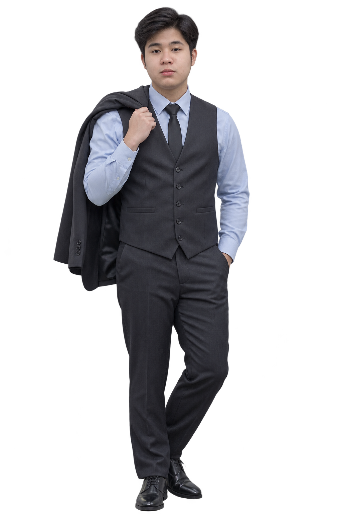

TopDent / Dental Clinic System
A dental clinic management application bringing patient records, appointment booking, and day-to-day clinic operations together. Live on topdent.website.
OPEN TO INTERNSHIPS & COLLABORATIONS
Hey, I’m Jairus. An IT student turning curious ideas into thoughtful digital experiences.
01 / SELECTED WORK
Real projects. Real learning.
A few things I’ve built along the way.
Project visuals below are interface studies, not screenshots of the live apps.
A dental clinic management application bringing patient records, appointment booking, and day-to-day clinic operations together. Live on topdent.website.
A scam and phishing awareness MVP for Filipino users. Explainable message and link risk checks, lessons, and quizzes.
I built this calendar for my wife — a personal way to keep her days organized, with recurring events and reminders for the things that matter to her. Made for web and Android, with her schedule saved on her device.
A JavaScript storefront backed by an ASP.NET Core API. JWT login, product search, cart, checkout, and order management.
Managing books, borrowing, and student records through an ASP.NET Web Forms application.
A custom portfolio with interactive visuals, playful motion, and a responsive project showcase. You’re here.
02 / THE HUMAN BEHIND THE CODE

JAIRUS / ALWAYS A WORK IN PROGRESSI like the moment an idea starts making sense — and the even better moment it starts working.
I’m Jairus Shealtiel Nazareno, an IT student exploring software development, web design, and cybersecurity. I enjoy building useful things, figuring out how they work, and finding ways to make them better.
From clinic systems to scam-awareness tools, each project is a chance to connect what I’m learning with something people can actually use.
03 / MY TOOLKIT
The technologies and ideas
I’m learning by putting them to work.
Responsive interfaces with a little personality and a focus on usability.
Connecting interfaces, data, and application logic into working systems.
Learning to protect systems and solve the problems behind the screen.
A LITTLE BACKING TO THE CURIOSITY
Security principles, network security, risk, and security operations.
Programming fundamentals, object-oriented thinking, and problem solving.
04 / THE NEXT GOOD IDEA
LET’S MAKE IT HAPPEN.I’m open to internships, freelance projects,
and building something interesting together.